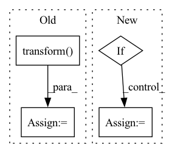

Pattern ID :27701

Before Change
def generate_order(stock: str, start_idx: int, end_idx: int) -> None:
df = pd.read_pickle(DATA_PATH / f"{stock}.pkl")
df = df.groupby("date").take(range(start_idx, end_idx)).droplevel(level=0)
div = df["$volume0"].rolling((end_idx - start_idx) * 60).mean().shift(1).groupby(level="date").transform("first")
order_all = pd.DataFrame(df.groupby(level=(2, 0)).mean().dropna())
order_all["amount"] = np.random.lognormal(-3.28, 1.14) * order_all["$volume0"]
order_all = order_all[order_all["amount"] > 0.0]
After Change
def generate_order(stock: str, start_idx: int, end_idx: int) -> bool:
dataset = pd.read_pickle(DATA_PATH / f"{stock}.pkl")
df = dataset.handler.fetch(level=None).reset_index()
if len(df) == 0 or df.isnull().values.any() or min(df["$volume0"]) < 1e-5:
return False
df["date"] = df["datetime"].dt.date.astype("datetime64")
df = df.set_index(["instrument", "datetime", "date"])
df = df.groupby("date").take(range(start_idx, end_idx)).droplevel(level=0)
In pattern: SUPERPATTERN
Frequency: 3
Non-data size: 4
Instances
Fragment ID: 82188807
Project Name: microsoft/qlib
Commit Name: 7f1e8c52063e92cfcd11228255c2a0cb44798a90
Time: 2023-04-26
Author: huoranli@microsoft.com
File Name: examples/rl_order_execution/scripts/gen_training_orders.py
M Class Name: AnonimousClass
N Class Name: AnonimousClass
M Method Name: generate_order(3)
N Method Name: generate_order(3)
M Parent Class:
N Parent Class:
M File Name: examples/rl_order_execution/scripts/gen_training_orders.py
N File Name: examples/rl_order_execution/scripts/gen_training_orders.py
M Start Line: 15
M End Line: 17
N Start Line: 15
N End Line: 40
'>
Before Change
for i, path in enumerate(self.masks[index]):
mask[i] = image_invert(path, True)
image, mask = self.transform({"image": image, "mask": mask})
return image, mask
def __len__(self):
After Change
mask[i] = image_invert(path, True)
if self.transform:
image = self.transform(image)
if self.target_transform:
mask = self.transform(mask)
return image, mask
def __len__(self):
'>
Fragment ID: 82188814
Project Name: biasvariancelabs/aitlas
Commit Name: 01d0b83b3012e77cab1fddc253cc0887127af1b9
Time: 2021-03-11
Author: ivica.dimitrovski@gmail.com
File Name: aitlas/datasets/chactun.py
M Class Name: ChactunDataset
N Class Name: ChactunDataset
M Method Name: __getitem__(2)
N Method Name: __getitem__(2)
M Parent Class: BaseDataset
N Parent Class: BaseDataset
M File Name: aitlas/datasets/chactun.py
N File Name: aitlas/datasets/chactun.py
M Start Line: 26
M End Line: 31
N Start Line: 30
N End Line: 38
'>
Before Change
mask = image_loader(self.masks[index], False)
masks = [(mask == v) for v in self.class_values]
mask = np.stack(masks, axis=-1).astype("float32")
image, mask = self.transform({"image": image, "mask": mask})
return image, mask
def __len__(self):
After Change
mask = np.stack(masks, axis=-1).astype("float32")
if self.transform:
image = self.transform(image)
if self.target_transform:
mask = self.transform(mask)
return image, mask
def __len__(self):
'>
Fragment ID: 82188815
Project Name: biasvariancelabs/aitlas
Commit Name: 01d0b83b3012e77cab1fddc253cc0887127af1b9
Time: 2021-03-11
Author: ivica.dimitrovski@gmail.com
File Name: aitlas/datasets/camvid.py
M Class Name: CamVidDataset
N Class Name: CamVidDataset
M Method Name: __getitem__(2)
N Method Name: __getitem__(2)
M Parent Class: BaseDataset
N Parent Class: BaseDataset
M File Name: aitlas/datasets/camvid.py
N File Name: aitlas/datasets/camvid.py
M Start Line: 27
M End Line: 31
N Start Line: 29
N End Line: 37